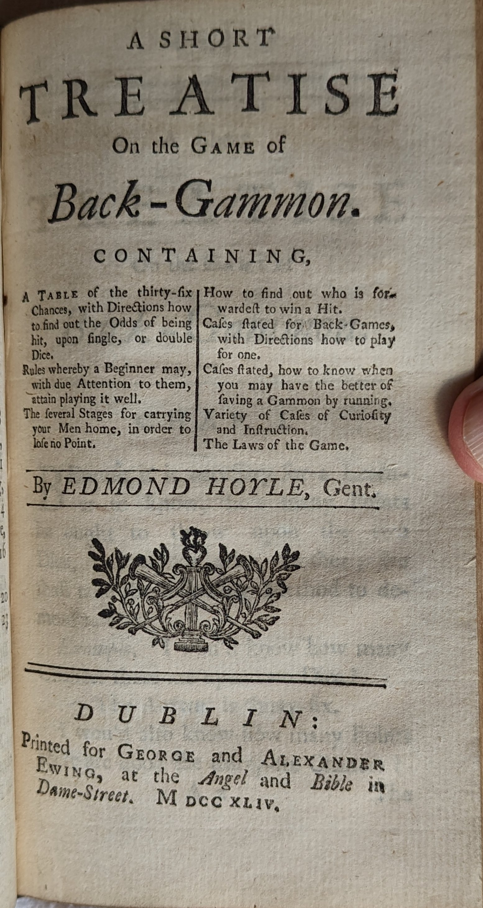

A Descriptive Bibliography of Edmond Hoyle
Copyright © 2014-26 by David Levy
(page updated 2026-01-30)User Guide
Backgammon.D.1
A Short Treatise on the Game of Backgammon, printed for George and Alexander Ewing, first Dublin edition, 1744.
 |
Title: | A SHORT | TREATISE | On the Game of | Back-Gammon. | CONTAINING, | [11 lines to left of rule] A Table of the thirty-ſix | Chances, with Directions how | to find out the Odds of being | hit, upon ſingle, or double | Dice. | Rules whereby a Beginner may, | with due Attention to them, | attain playing it well. | The ſeveral Stages for carrying | your Men home, in order to | loſe no Point. | [11 lines to right of rule] How to find out who is for-|wardeſt to win a Hit. | Caſes ſtated for Back-Games, | with Directions how to play | for one. | Caſes ſtated, how to know when | you may have the better of | ſaving a Gammon by running. | Variety of Caſes of Curioſity | and Inſtruction. | The Laws of the Game. | [rule] | By EDMOND HOYLE, Gent. | [rule] | [tailpiece] | [double rule] | DUBLIN: | Printed for George and Alexander | Ewing, at the Angel and Bible in | Dame-Street. M dcc xliv. |
| Collation: | 12o: A–F8/4 [$½ (−A4) signed]; 36 leaves, pp. [2 ] 1–69 [70] |
| Contents: | Signature (Page) Reference | Contents | Signature (Page) Reference | Running Titles |
| A1r | title | |||
| A1v | blank | |||
| A2r–E8v (1–62) | ‘[double rule] | A Short | TREATISE | On the Game of | Back-Gammon. | [...]’ | |||
| F1r–F1v (63–64) | ‘The LAWS of Back-Gammon. | [...]’ | |||
| F2r–F4r (65–69) | ‘[double rule] | An Alphabetical | TABLE | OF THE | CONTENTS. | [...]’ | |||
| F4v (70) | advertisements for Piquet.D.1 (price 6½), Whist.D.3 (price 6½), and Memory.D.1 (price 3d.) |
| Catchwords: | C7v(36) Suppoſe [II. Suppoſe]; D2r(41) Anſwer, [Anſwer.] |
| Publisher: | George and Alexander Ewing |
| Printer: | Samuel Powell (ornaments) |
| Notices: | 1744-05-01 The Dublin Courant: "This day is published...Price 6d. half-penny" |
| Price: | 6½d. (advertisement) |
| References: | ESTC T88040, Jessel 789, Marshall s7 no.8 p264 (1889-10-05), Rather 18 |
| Copies Seen: | BFl [Drama 82.1/CARE (b1085347)]; CU-BANC [pGV1469.B2 H69 1744] |
| Copies Seen in Collections: | L [7917 de.73] (ECCO) (see Ewing.B); O [Jessel f.541(4)] (see Ewing.A); O [Jessel f.570(3)] (see Ewing.B); O [Jessel f.571(3)] (see Ewing.B); NvLN [GV1201.H83 1743] (see Ewing.A); OCl [789.87H F45D] (see Ewing.B); TxU [Ak H852 B752p] (see Ewing.C); Levy [1609] (see Ewing.B) |
| Other Copies: | KLN |
| Other Copies in Collections: | C [Hib.7.745.29] (see Ewing.B); CaOTP [795 H598] (see Ewing.B); ICD [SPC. 795 H868P] (see Ewing.B); LU [GV1243.H7] (see Ewing.A); MH-H [SG 3652.152*] (see Ewing.C); WaS [R795 H852P] (see Ewing.B); AuNU [RB 4645.44] (see Ewing.B) |
| Notes: | Interestingly, the catchword error on D2r(41) was also made in Backgammon.1, suggesting that the type was set from the London edition. |